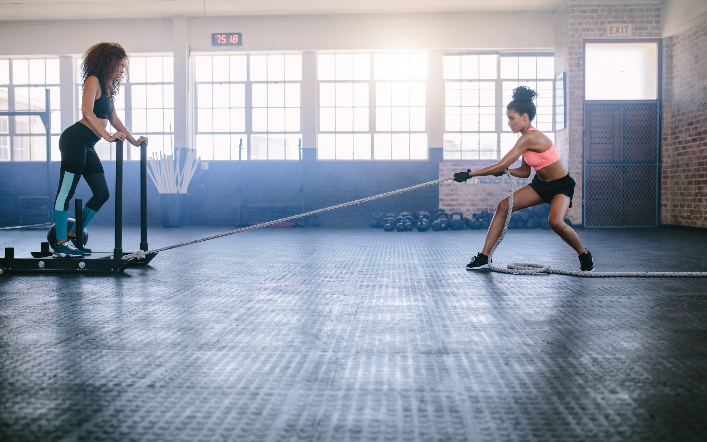
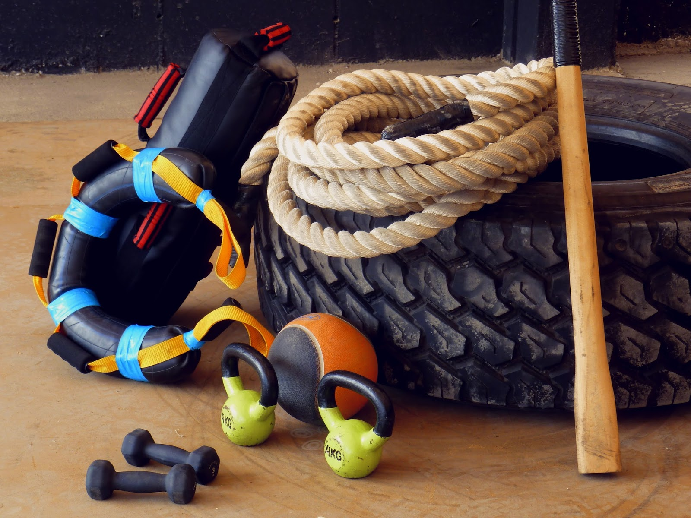

Alto Rendmiento
Somos especialistas.

Vos elegis el Rumbo
vos decidis.

Salud
Nos preocupa tu salud.
Somos especialistas.
vos decidis.
Nos preocupa tu salud.
Recorda, esto es una breve rutina aleatoria, realmente se necesita personalizar estos valores
Es un ejemplo de como podriamos realizar algunos ejercicios de fuerza en un iniciado para trabajar la fuerza resistencia
10 flexiones de brazo
5 abdominales
5 Burpis
20 sentadillas
Recorda, esto es una breve rutina aleatoria, realmente se necesita personalizar estos valores. Además, antes de este tipo de actividad, elonga bien!
Es un ejemplo de como podriamos realizar algunos ejercicios de fuerza en un iniciado para trabajar la fuerza resistencia
4 progresiones. Las progresiones serian de 50 metros y se realizan empezando trotando lento y se finaliza mucho más rápido
20 sentadillas lo mas rápido que puedas
10 sentadillas con salto
prueba con dos pasadas de 50 mts a toda velocidad
Recorda, esto es una breve rutina aleatoria, realmente se necesita personalizar estos valores.
Mueve un poco el cuello haciendo circulos con la cabeza de manera lenta, deja que los hombros caigan y los brazos muy flojos, es conveniente que estes en posicion de sentado
Toma unos momentos para ser conciente de tu respiración, inspira todo el aire que puedas y espiralo lentamente
Aguanta unos segundos la respiracion y nuevamente espira
Sería muy conveniente que todo esto lo realices con los ojos cerrados
Recorda, esto es una breve rutina aleatoria, realmente se necesita personalizar estos valores.
Deberías tomarte unos minutos al día para estirar
Sientate y estira tus pies, con las dos manos ve lo más cerca de las zapatillas que puedas y lleva el pecho lo más cerca que puedas de las rodillas, aguanta 45 segundos y de manera lenta volve a subir
Acuestate boca arriba, toma una pierna con las dos manos, la pierna debe estar estirada, luego llevala lo más alto que puedas, aguanta 30 segundos y cambia el pie (el pie contrario queda estirado en el piso)

Recorda, esto es una breve rutina aleatoria, realmente se necesita personalizar estos valores. Además, antes de este tipo de actividad, elonga bien!
Es un ejemplo de como podriamos realizar algunos ejercicios de resistencia en un iniciado
Solamente vas a realizar pasadas, como máximo deberían ser de 300 metros.
Al finaliza tomate las pulsaciones, si dan muy por encima de 140 por minuto, deberías correr más lento, si dan muy por debajo, deberías correr más rápido
Toma el tiempo en que te llevo hacerla y cuando la repitas deberás hacer ese mismo tiempo si las pulsaciones te han dado bien
El descanzo será hasta que tus pulsaciones bajen a 120 por minuto
Duerme bien, alimentate como corresponde y mantené los tiempos de pausas entre ejercicios, entre sesiones y entre jornadas de entrenamiento.